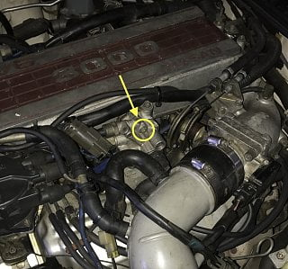

-
Hi all,
(My first post btw!) After some strange idle issues I've identified a vacuum leak at my IACV. One of the three bolts holding the IACV to the intake manifold seems to have snapped off within the manifold (half way down the thread of the bolt somehow) and is unable to be tightened. The bolt is located at the top of the IACV (see picture).
I'll probably have to battle with a bolt extractor or something to get the snapped portion out which will be fun. I'm having trouble locating the right bolt to replace the broken one though…
Can this be bought as a new part? If so, is there a part number / measurements I will need?1985 AUDM Z31
Manual NA 2+2 -
Should be a metric fine thread bolt, just get the right diameter and thread pitch and you should be fine. I would take the whole thing off so you can get a drill on the old bolt. Then measure one of the other bolts and buy one. It doesn't have to be a "special OEM" bolt, just metric fine thread that is the correct length. After you take the IAC off, I would see if the hole is stripped or there really is something broken off in there. Might just have to put a Heli-coil in it to replace the threads and put back together (with a fresh gasket of course).Butter (credit where credit is due): "You have this "gift" where you can make cooking a Hot Pocket seem like you need a certain wavelength microwave and involve brown mustard." -
Hex Bolt is Nissan Part No.08120-65028. It's NLA along with the IAA unit. Check ebay for the IAA and see if the seller has the hex bolts and if they're willing to part with them separately. Also check craigslsit for Z31 part outs. -
You can use a generic hex head bolt and you can even use a slightly longer one. I messed up the threads on my plenum (was completely idle minded and started fastening them not loosening) and got replacements from the bolt store. Just take one of the bolts to a store and they can find a replacement for you. -
You need only 1? I removed mine but should still have the bolts. ill throw them in an envelope if you PM me your address. -
dont even waste time with an easy out, if it snaps off inside, you will be up the creek.
remove the manifold and drill it out proper. I suppose you could leave the manifold on and use a 90 degree drill, but id rather have in in a vise looking straight at it.
Last edited by Ski300zx; 02-26-2017, 06:25 AM.Ride it like you stole it…
1986 300zx NA2T - CM 3" turbo back, Pathy 3.0 Engine, Custom cold air intake, 255lph Walboro, T3 turbo, 90 shot of nitrous, 30A trans, 88t LSD, Poly everywhere, SS brakelines. 288whp 336wtq
2001 YZF600 - Sold for Nitrous and Exhaust Upgrade…
1993 Toyota Corolla - The invincible daily driver, off to greener pastures.
2002 Nissan Maxima SE - New daily driver -
Update:
Thanks for the advice, all! After a visit to a parts store and matching bolts to standard Hex bolts, as suggested, I have found that the bolt is M6. It will screw in to a point but when attempting to tighten it down, the bolt almost 'pops' loose. I tried a few different lengths without success so I reckon its threaded
I'll remove the IACV from the manifold and have a good look at it sometime this week, measure the other IACV bolts and try them in the trouble spot.
NissanXRMA: If the bolts I've tried don't work, others prob won't help. I appreciate the offer though, thank you!1985 AUDM Z31
Manual NA 2+2 -
So, I removed the IACV and had a good look around. The thread was munched, the previous owner must've used a random imperial bolt because the top of the thread was stripped. I tried the other bolts (M6x65mm btw) in the same hole and sure enough, nice and snug!
Bought a set of M6x60 and i finally sealed my IACV vacuum leak (Used the carby cleaner spray test to confirm there is no longer a leak).
However… I still have the high idle on cold starts")
The hunt continues…1985 AUDM Z31
Manual NA 2+2

Copyright © 2006–. All rights reserved. Privacy Policy